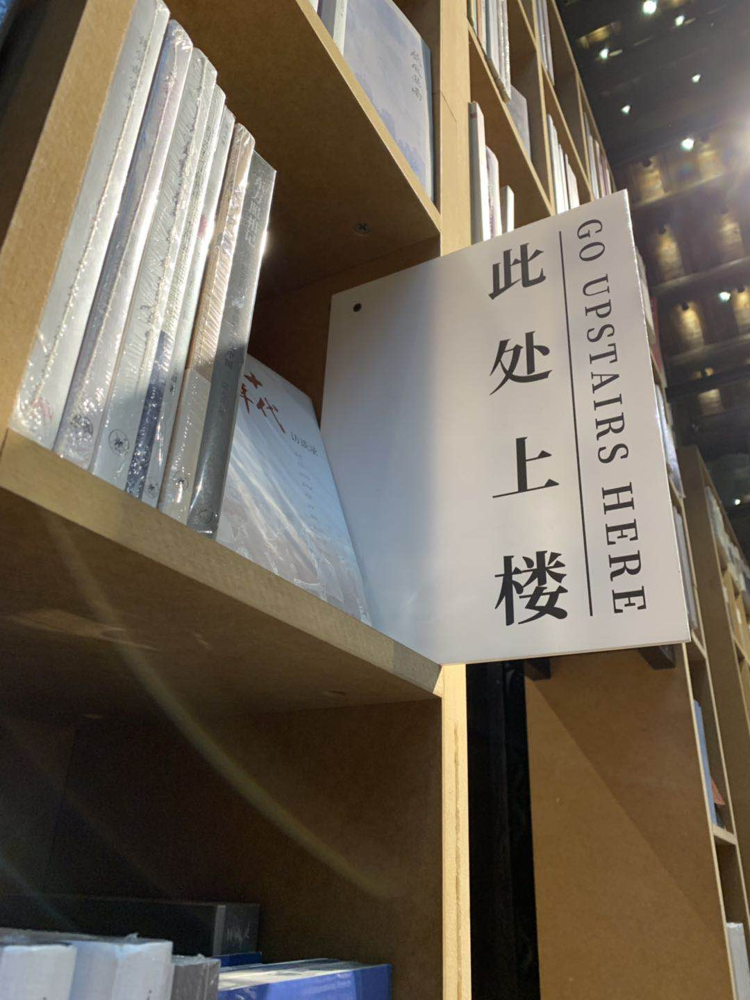

南京行后，又勾起了我对于旧时的回忆。
读高中时，我曾对明朝和民国这两个时期，有过不切实际的遐想。如果明末的资本主义萌芽能够延续下去，是否中国也能走到君主立宪，成为列强；如果没有清党，国共合作延续至今，是否中国也能建立一个共和的联合政府。
在我的政治观念建立的过程中，于我影响最大的是我高中的语文老师，余某人。他让我看到了当前中国下的另一面。那时候还是很中二的年纪，不满于现状，又想着能否有变革之法，便只能钻研旧史，希望能够找到一些出路。（至少与他人舌战之时，能多一份口舌之快。）
到今时，我于当初，少了一份曾经的”忧国忧民”之心，在乎的，只在于自己。我再读史，其实更多的是一种逃避。至少这于我是一份爱好，我沉浸其中，对于现实我所需担心的一切，大可抛之脑后。
我现今所做的事，大多是出于一种逃避，对于曾经感情，对于现实的逃避。我想抹去自己曾经于同济大学求学四载的这段经历，虽然它曾经是美好的，但是在美好的幻境破灭之后，我所能留下的，唯有痛苦。
而读史，于我而言大约是糖衣裹着砒霜，我明知一味沉迷其中、逃避现实，终是不可取之事，但这也是我仅存的慰藉，是我为自己搭建的幻境，或堕落、或癫笑、或痴语，至少随乎我心。
